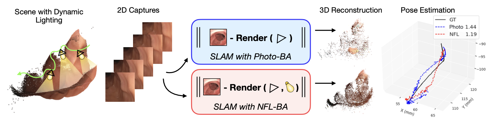
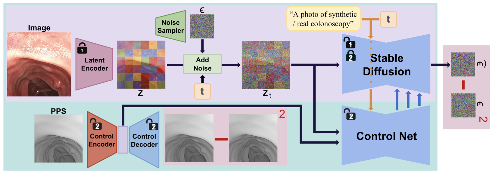
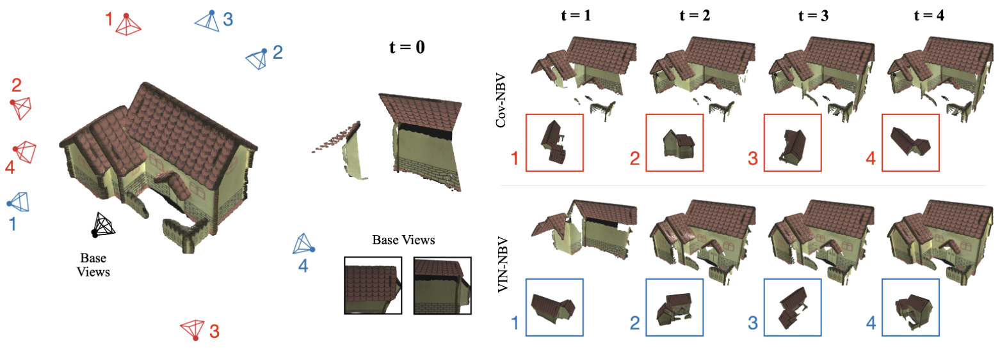

Hi! I'm a Master's student in Computer Science at UNC Chapel Hill, where I am currently researching 3D computer vision for medical imaging under the guidance of Prof. Roni Sengupta.
My research focuses on leveraging 3D computer vision techniques to improve medical procedures and enhance patient care. I work on developing methods for 3D scene reconstruction and synthetic dataset creation to improve the accuracy of real-world imaging applications, particularly in endoscopy. My goal is to apply these advancements in geometry to real-world applications, advancing healthcare diagnostics and driving innovation in robotics.
Previously, I obtained my B.Sc in Computer Science and Applied Mathematics from UNC Chapel Hill. Additionally, I had the opportunity to serve as a visiting scholar through NSF-sponsored REU programs at Rice University and the University of Southern California.
|  |
NFL-BA: Improving Endoscopic SLAM with Near-Field Light Bundle Adjustment We introduce a Bundle Adjustment loss using lighting cues to improve pose and map estimation in dense visual SLAM for endoscopy. |
|  |
PPS-Ctrl: Controllable Sim-to-Real Translation for Colonoscopy Depth Estimation PPS-Ctrl fuses Stable Diffusion and ControlNet, guided by physics-informed shading for structure-preserving endoscopy image translation. |
|  |
VIN-NBV: A View Introspection Network for Next-Best-View Selection for Resource-Efficient 3D Reconstruction The VIN predicts reconstruction-quality gains for candidate views using 3D-aware features to improve 3D scene reconstruction. |